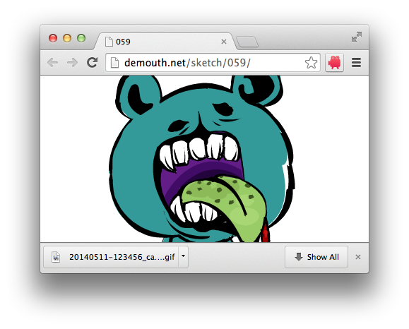

使い方
- 1. アイコンクリック
-
このアイコンをクリックすると撮影が開始します。
「撮影方法」で「選択ウィンドウ」を選択している場合は下記のウィンドウが表示されます。この中から撮影を行いたいウィンドウを選択します。
- 2. 録画開始
-
アイコンをクリックして録画が開始されると、アイコンが下記のように変化します。プログレスバーがいっぱいになると撮影が完了します。
- 3. 録画終了
-
録画が終了すると録画した内容をアニメーションgif画像に変換します。gif画像のファイルサイズが増えると、この変換処理にかかる時間も増え事に注意してください。
上記のプログレスバーがいっぱいになるとgif画像のダウンロードが行われます。
 - オプション設定
-
アイコンを右クリックし、「オプション」をクリックするとオプション設定を行う画面に遷移します。